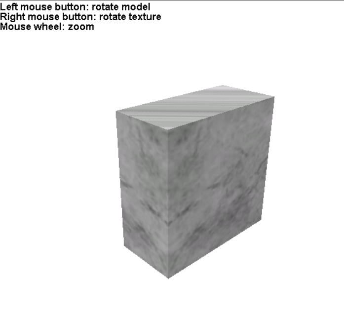

CS184 Final Project: Solid Texture Synthesis
Andrew Kim (adkim@berkeley.edu): 3032735084, github.com/adkim99
Mariana Vazquez (marianavazquezr@berkeley.edu): 3033107768, github.com/marianavazquezr
Tom Liu (xingweike@berkeley.edu): 3032681823, github.com/Xingweike
Summary
The project that we chose to do was “Solid Texture Synthesis” which is a very useful tool. Our goal for this project was to be able to take a 2D texture exemplar and synthesize a 3D solid texture from it and be able to apply it to multiple objects. We chose this because we thought it was interesting that our implementation would be able to carve out something out of a material given only a 2D texture exemplar. This method allows for more realistic solid textures to be rendered such as wood and stone.
Technical Approach
We based our final approach on the paper “Solid Texture Synthesis from 2D Exemplars” (https://www.cs.princeton.edu/courses/archive/fall07/cos597B/papers/kopf-solid-texture.pdf). In this paper, they integrate ideas from non-parametric texture synthesis as well as global histogram matching.
We first started off building simple solid textures and tested these solids. The easiest of all was to simply stack up our 2D texture on top of each other over and over again. This resulted in a 2D texture that seemed pretty good, but stacking the image would result in the solid cube having very blurry sides. This was the first step in our implementation, and getting to this point required us to discover and solve many problems we had not thought of before. For example, here we discovered that using python was way too slow, and we had to recreate the whole project in C++ using the opencv library. Additionally, viewing and applying the solid texture to a model was a very difficult endeavor, so we found an external tool that helped us generate visualizations for our solids.
We then continued to build on the previous simple solid texture synthesis algorithm. By taking the image and continually rotating the matrix circularly, we could easily create a solid 2D texture that was more consistent than simply stacking the original texture. The resulting solid was now only blurry from one of the three axis, and gave good results when applied to our bunny model. After we had finished our unique solid texture synthesis, we decided to go a step further and recreate the complex solid texture synthesis mentioned in the paper.
In order to complete the solid optimization, we needed to implement two stages: the search phase and the optimization phase. After these two were done, then histogram matching was used. Overall, the solid optimization process starts by forming a volume where each voxel is chosen from the texture exemplar randomly. Through each iteration, the volume is improved to look more similar to the exemplar. This is done by using an energy function that shows the differences between the volume and the exemplar. The texture energy is minimized iteratively by alternating between the search phase and the optimization phase.
In the search phase, we start with a solid filled in with random pixels from the original texture. We took each axis aligned neighborhood from our voxel and found the neighborhood in the exemplar texture that matched it most closely. These matching neighborhoods are fed as input to the optimization phase in order to calculate the voxel values that minimize the energy function. We identified three neighborhoods from the original texture that match the three axis-aligned neighborhoods for each voxel in the generated solid texture. We do ANN using the unrolled axis-aligned neighborhoods for each voxel as queries and the exemplar neighborhoods as data points. This process is strided with stride of 2 for speedup, so that we only find the matches for every other voxel. In order to speed up ANN, we used PCA to reduce dimensionality while retaining 95% variance.
The paper did not mention whether they alternated between even and odd indices in order to cover the solid texture during search phases. To clarify, striding without alternating between starting at 0 and 1 for consecutive search phases would mean that only half of the texels ever get matched to their exemplar neighborhoods. We made sure to alternate between 0 and 1 as the starting indices for this purpose.
In the optimization phase, we take the three neighborhoods that we calculated in the search phase and use them to update each voxel in the solid. The value of each voxel is calculated by finding the weighted average of a collection of texels from the different exemplar neighborhoods found in the search phase. One difference from the paper is that the paper uses mean shift clustering to improve results. We did not implement this.
After the solid optimization is completed, we start the histogram matching process. This is an important step because only implementing the solid optimization algorithm is not enough because this process alone can converge to the wrong local minimum. Histogram matching is used after the process to address this issue. However, we did this a little different than the paper described.
The paper used iterative re-weighting during histogram matching, but we just did histogram matching separately. We used histogram matching to try and match global statistics of the exemplar to those of the solid in order to reduce noise in the solid texture.
Problems Throughout
One lesson that we learned that helped us a lot for this project was realizing that C++ was faster than Python. In our milestone update, we mentioned that our implementation was very slow. We were testing it with a 128x128 small texture which was creating about 2 million voxels. For each of those voxels, we were comparing its neighborhoods to each neighborhood, something that would take a huge amount of time to complete. One of our main priorities after realizing this was that we needed to figure out how we could speed it up and switching to C++ was certainly a simple change that we made to help our implementation run a little bit faster.
Something that we also learned that helped us tackle some of our problems was how to use some OpenCV libraries. We used some of these throughout our project when implementing various of the phases. These were really helpful to understand and use since they ended up speeding up our implementation and made the algorithm simpler to implement.
We did have some problems with the aforementioned libraries. Namely, the ANN library that we used from OpenCV did not return the actual closest exemplar neighborhood and instead seemed to return only the first exemplar neighborhoods, leading to solid textures which were largely similar only to a small patch of the exemplar image. Unfortunately, we did not have enough time to debug this error, and this resulted in various images you can see below.
Results
Github: https://github.com/Xingweike/cs184_final_projIn our github you can see our old python code in the python folder, and our new migrated code in the c_plus_plus folder. All of our code is located in main.cpp.
Video: https://drive.google.com/open?id=11noc7F47s_DVOFA-34aLe0juKU9vita8
|
|
|
|
|
|
|
|

|
|
|
|
|

|
|
Below are examples of our nearest neighbors algorithm failing. Instead of finding the best matching neighborhood, it would always fetch the first neighborhood. As a result, we get a solid made of one neighborhood multiplied.
|
|
|
|
|
|
|
|
|
References
Solid Texture Synthesis from 2D Exemplars: https://www.cs.princeton.edu/courses/archive/fall07/cos597B/papers/kopf-solid-texture.pdf
Contributions
Andrew Kim: Helped write solid texture synthesis and code for solid texture optimization from the paper, and generated images from solid textures.
Mariana Vazquez: Helped write and debug our code and wrote a majority of our writeups and powerpoints.
Tom Liu: Helped write solid texture synthesis, helped debug solid texture optimization, and provided .vols to generate images out of.